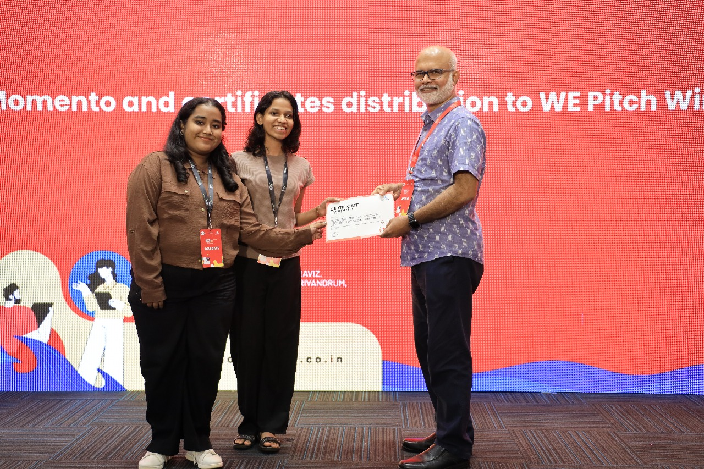
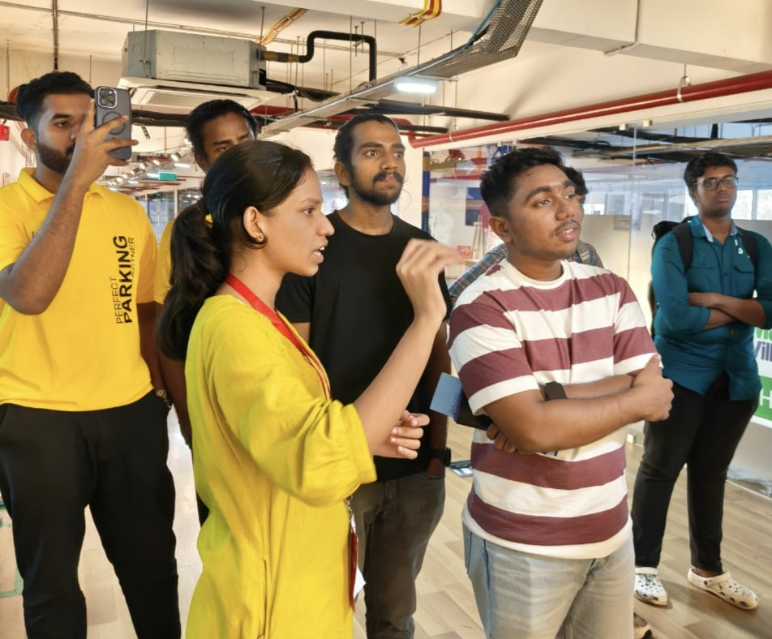
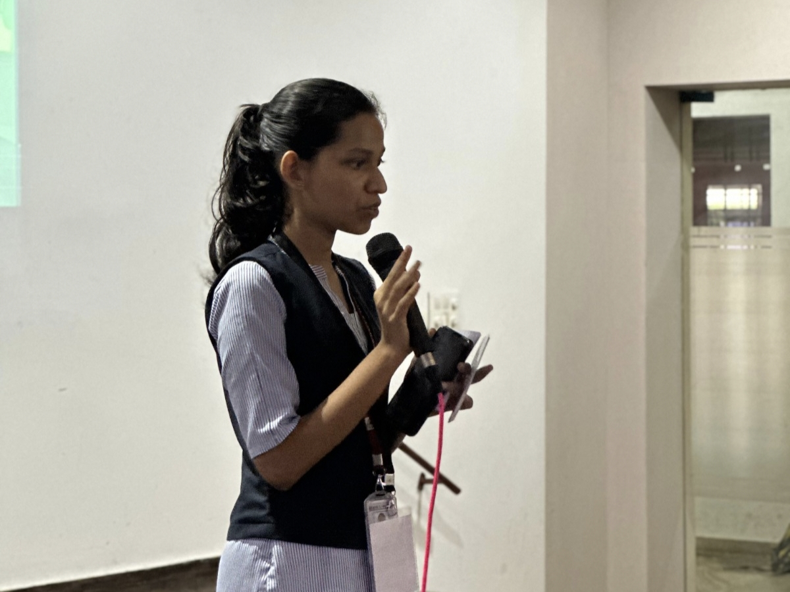
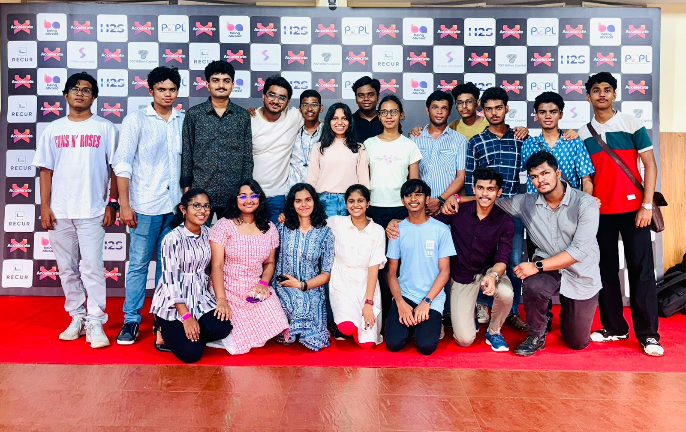
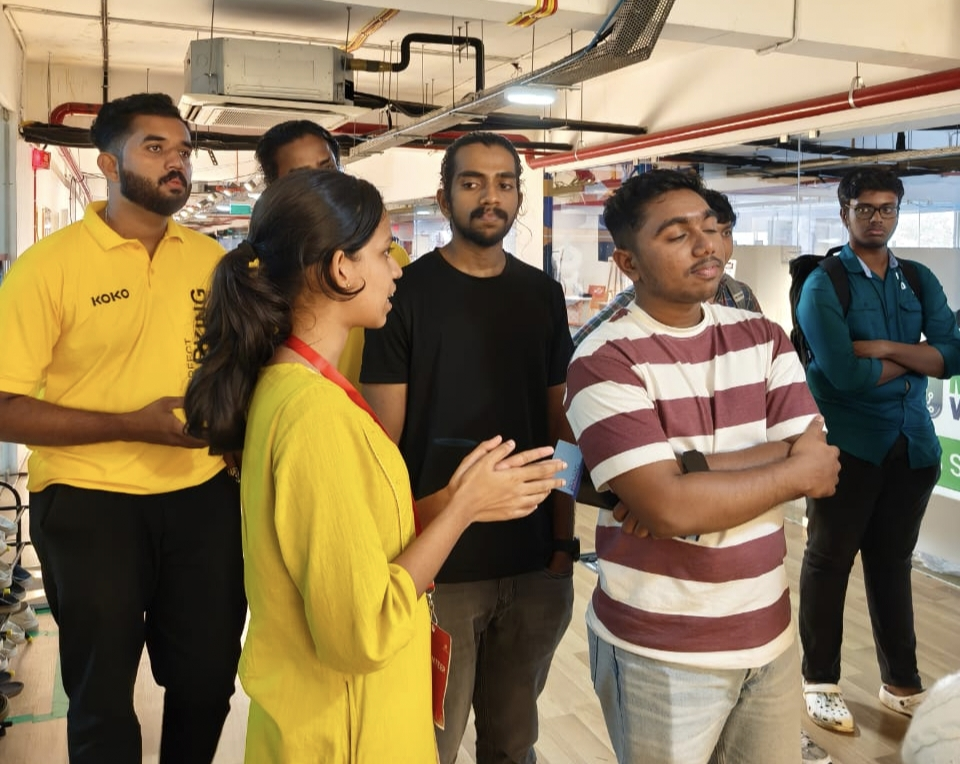
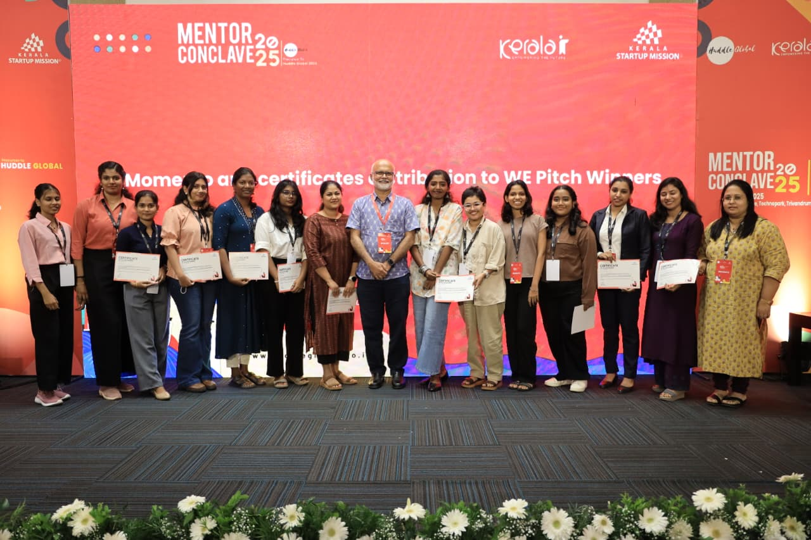

Hello I'm Sreelakshmi
I'm an engineering student blending technology, design, and artistic expression.
I love building elegant solutions, experimenting with ideas, and creating things that feel meaningful and beautiful.
I am someone deeply curious, with a wide range of interests that I pursue with equal enthusiasm. This often places me in fast-moving, deadline-driven environments, where I’ve learned to adapt quickly, think efficiently, and arrive at effective solutions. At the core of it all is a genuine love for learning.
My inspiration to pursue engineering began at a project expo in 2018, where I experienced a prototype that could control the movement of my palm and fingers through simple electrical connections. Designed to assist patients with paralysis, it left a lasting impression on me. That moment shaped my goal to use technology in ways that create meaningful, human-centered impact.
Beyond academics, I embrace creativity and maintain an artistic perspective, which allows me to approach problems with both logic and imagination. I enjoy connecting with people, exchanging ideas, and exploring diverse perspectives. This openness has led me into inspiring spaces and conversations with truly interesting individuals, continuously shaping the way I think and create.





Winner of the WE Pitch competition and selected for the WE Start Cohort, an incubation initiative supported by Kerala Startup Mission. This experience introduced me to startup ideation, validation, and early-stage venture development.
Contributed to the NASA Space Apps Challenge 2025 where we recieved Global nomination for our project on autonomous pollution monitoring UAVs, which was recognized for its innovative approach to environmental monitoring and data collection.
I had the privilege of leading the Women's cell at IEDC, where I organized various events and initiatives to empower women in technology. As a member of the executive community of my campus IEDC.
Hackearth, where our team developed a solution leveraging IoT technology for environmental conservation, we emerged runner up for the iot based forest fire detection and conservation project.
A JavaScript-based tool to calculate consumed nutrients and identify missing vitamins and minerals using a South-Indian food database.
Designed UAV-based system for real-time air quality monitoring using onboard sensors and wireless data transmission for spatial pollution analysis.
An Arduino-based system integrating temperature, smoke, and gas sensors for early detection of forest fires with real-time alert mechanisms.
A productivity website, which houses a parrot that simply roasts you every interval, calls your laziness out and keeps you company as you catch up on your pending assignments.
An event management website for my college featuring login, event adding, and personal event tracking.
An IoT-enabled smart railway crossing system using sensors and microcontrollers to automate gate control and manage vehicular traffic, improving safety and efficiency.
The Kerala Startup Mission (KSUM) hosted the Mentor Conclave 2025 on October 25, 2025, at Park Centre, Technopark, Trivandrum as a precusser to Huddle Global. I had the Privilege to be a delegate at conclave. The event included masterclasses, panel discussions, and networking with top industry leaders, investors, and founders. Featured insights from leaders like Anoop Ambika (CEO, KSUM) and Bhaskar Roy (Tata Sons Ltd). Special focus on honoring mentors contributing to the WeGrow Pre-Incubation Programme, supporting and celebrating women entrepreneurs.
An important experience to be part of kerala's largest women only hackathon. Grateful to Tinkerhub for providing an all equipped platform for young women in tech.